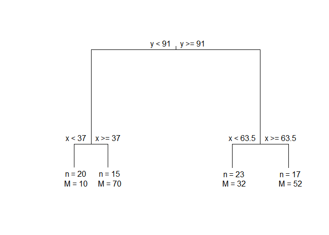

Implementation of the Monothetic Clustering algorithm on continuous data set. A lot of extensions are included in the package, including applying Monothetic clustering on data set with circular variables, visualizations with the results, and permutation and cross-validation based tests to support the decision on the number of clusters.
The package performs Monothetic clustering on numerical variables only data. The extended features include clustering on one circular variable, limiting the sets of splitting variables. There are also S3 functions such as print and plot that works for MonoClust output object.
Installation
You can install the released version of monoClust from CRAN with:
install.packages("monoClust")And the development version from GitHub with:
# install.packages("remotes")
remotes::install_github("vinhtantran/monoClust")Example
This is a basic example which shows you how to solve a common problem:
library(monoClust)
library(cluster)
data(ruspini)
ruspini4sol <- MonoClust(ruspini, nclusters = 4)
ruspini4sol
#> n = 75
#>
#> Node) Split, N, Cluster Inertia, Proportion Inertia Explained,
#> * denotes terminal node
#>
#> 1) root 75 244373.900 0.6344215
#> 2) y < 91 35 43328.460 0.9472896
#> 4) x < 37 20 3689.500 *
#> 5) x >= 37 15 1456.533 *
#> 3) y >= 91 40 46009.380 0.7910436
#> 6) x < 63.5 23 3176.783 *
#> 7) x >= 63.5 17 4558.235 *
#>
#> Note: One or more of the splits chosen had an alternative split that
#> reduced inertia by the same amount. See "alt" column of "frame"
#> object for details.Plotting MonoClust tree:
plot(ruspini4sol)